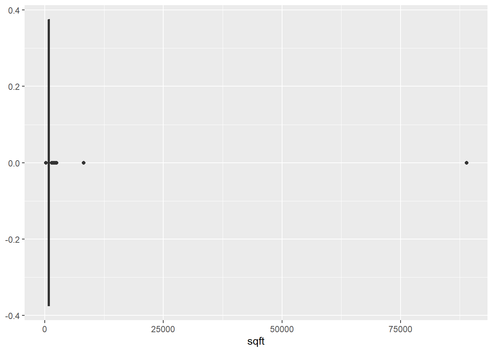

18 Data Forensics
After this lesson, you should be able to:
- Cleaning:
- Explain what it means for a data set to be “tidy”
- Pivot columns in a data set to make it tidy
- Separate values in a column that contains multiple values per cell
- Convert columns to appropriate data types
- Forensics:
- Locate and count missing values in a data set
- Explain what it means for a value to be an “outlier”
- Locate and count outliers in a data set
18.1 Introduction
This lesson focuses on how to identify, diagnose, and fix potential problems in tabular data sets. There are several different kinds of problems that can arise:
- Structural (data are transposed or rotated)
- Data types (some columns have the wrong types)
- Missing values
- Outliers (extreme values)
We’ll see examples of each of these.
18.2 Tidy Data
The Tidyverse is so named because many functions in Tidyverse packages require data frames that are in tidy form. Before we see the requirements for a data set to be tidy, we need to define or review some terminology from statistics.
A feature (also called a covariate or a variable) is measurement of something, usually across multiple subjects. For example, we might decide to measure the heights of everyone in the class. Each person in the class is a subject, and the height measurement is a feature. Features don’t have to be quantitative. If we also asked each person their favorite color, then favorite color would be another feature in our data set. Features are usually, but not always, the columns in a tabular data set.
An observation is a set of features measured for a single subject or at a single time. So in the preceding example, the combined height and favorite color measurement for one student is one observation. Observations are usually, but not always, the rows in a tabular data set.
Now we can define what it means to be tidy. A tabular data set is tidy if and only if:
- Each observation has its own row.
- Each feature has its own column.
- Each value has its own cell.
These rules ensure that all of the values are visually organized and are easy
to access with R’s built-in indexing operations. For instance, the $ operator
gets a column, and in a tidy data set, columns are features. The rules also
reflect the way statisticians traditionally arrange tabular data sets.
Let’s look at some examples of tidy and untidy data sets. The tidyr package provides examples, and as we’ll see later, it also provides functions to make untidy data sets tidy. As usual, we first need to load the package:
# install.packages("tidyr")
library(tidyr)Let’s start with an example of tidy data. This data set is included in the tidyr package and records the number of tuberculosis cases across several different countries and years:
table1## # A tibble: 6 x 4
## country year cases population
## <chr> <int> <int> <int>
## 1 Afghanistan 1999 745 19987071
## 2 Afghanistan 2000 2666 20595360
## 3 Brazil 1999 37737 172006362
## 4 Brazil 2000 80488 174504898
## 5 China 1999 212258 1272915272
## 6 China 2000 213766 1280428583When you first look at a data set, think about what the observations are and what the features are. If the data set comes with documentation, it may help you figure this out. Since this data set is a tidy data set, we already know each row is an observation and each column is a feature.
Features in a data set tend to take one of two roles. Some features are
identifiers that describe the observed subject. These are usually not what
the researcher collecting the data is trying to find out. For example, in the
tuberculosis data set, the country and year columns are identifiers.
Other features are measurements. These are usually the reason the researcher
collected the data. For the tuberculosis data set, the cases and population
columns are measurements.
Thinking about whether features are identifiers or measurements can be helpful when you need to use tidyr to rearrange a data set.
18.2.1 Columns into Rows
Tidy data rule 1 says each observation must have its own row. Here’s a table that breaks rule 1:
table4a## # A tibble: 3 x 3
## country `1999` `2000`
## * <chr> <int> <int>
## 1 Afghanistan 745 2666
## 2 Brazil 37737 80488
## 3 China 212258 213766All of the numbers measure the same thing: cases. To make the data tidy, we
must rotate the 1999 and 2000 column names into rows, one for each value in
the columns. The new columns are year and cases.
This process means less columns (generally) and more rows, so the data set becomes longer.
We can use the pivot_longer function to rotate columns into rows. We need to
specify:
- Columns to rotate as
cols. - Name(s) of new identifier column(s) as
names_to. - Name(s) of new measuerment column(s) as
values_to.
Here’s the code:
pivot_longer(table4a, -country, names_to = "year", values_to = "cases")## # A tibble: 6 x 3
## country year cases
## <chr> <chr> <int>
## 1 Afghanistan 1999 745
## 2 Afghanistan 2000 2666
## 3 Brazil 1999 37737
## 4 Brazil 2000 80488
## 5 China 1999 212258
## 6 China 2000 21376618.2.1.1 How to Pivot Longer without tidyr
You also can do this without tidyr:
- Subset columns to separate
1999and2000into two data frames. - Add a
yearcolumn to each. - Rename the
1999and2000columns tocases. - Stack the two data frames with
rbind.
# Step 1
df99 = table4a[-3]
df00 = table4a[-2]
# Step 2
df99$year = "1999"
df00$year = "2000"
# Step 3
names(df99)[2] = "cases"
names(df00)[2] = "cases"
# Step 4
rbind(df99, df00)## # A tibble: 6 x 3
## country cases year
## <chr> <int> <chr>
## 1 Afghanistan 745 1999
## 2 Brazil 37737 1999
## 3 China 212258 1999
## 4 Afghanistan 2666 2000
## 5 Brazil 80488 2000
## 6 China 213766 200018.2.2 Rows into Columns
Tidy data rule 2 says each feature must have its own column. Let’s look at a table that breaks rule 2:
table2## # A tibble: 12 x 4
## country year type count
## <chr> <int> <chr> <int>
## 1 Afghanistan 1999 cases 745
## 2 Afghanistan 1999 population 19987071
## 3 Afghanistan 2000 cases 2666
## 4 Afghanistan 2000 population 20595360
## 5 Brazil 1999 cases 37737
## 6 Brazil 1999 population 172006362
## 7 Brazil 2000 cases 80488
## 8 Brazil 2000 population 174504898
## 9 China 1999 cases 212258
## 10 China 1999 population 1272915272
## 11 China 2000 cases 213766
## 12 China 2000 population 1280428583Here the count column contains two different features: cases and population.
To make the data tidy, we must rotate the count values into columns, one for
each type value. New columns are cases and population.
This process means less rows and more columns, so the data set becomes wider.
We can use pivot_wider to rotate rows into columns. We need to specify:
- Column names to rotate as
names_from. - Measurements to rotate as
values_from.
Here’s the code:
pivot_wider(table2, names_from = type, values_from = count)## # A tibble: 6 x 4
## country year cases population
## <chr> <int> <int> <int>
## 1 Afghanistan 1999 745 19987071
## 2 Afghanistan 2000 2666 20595360
## 3 Brazil 1999 37737 172006362
## 4 Brazil 2000 80488 174504898
## 5 China 1999 212258 1272915272
## 6 China 2000 213766 128042858318.2.2.1 How to Pivot Wider without tidyr
You can also do this without tidyr:
- Subset rows to separate
casesandpopulationvalues. - Remove the
typecolumn from each. - Rename the
countcolumn tocasesandpopulation. - Merge the two subsets by matching
countryandyear.
# Step 1
cases = table2[table2$type == "cases", ]
pop = table2[table2$type == "population", ]
# Step 2
cases = cases[-3]
pop = pop[-3]
# Step 3
names(cases)[3] = "cases"
names(pop)[3] = "population"
# Step 4
tidy = cbind(cases, pop[3])This code uses the cbind function to merge the two subsets, but it would be
better to use the merge function. The cbind function does not use
identifier columns to check that the rows in each subset are from the same
observations.
Run vignette("pivot") for more examples of how to use tidyr.
18.2.3 Separating Values
Tidy data rule 3 says each value must have its own cell. Here’s a table that breaks rule 3:
table3## # A tibble: 6 x 3
## country year rate
## * <chr> <int> <chr>
## 1 Afghanistan 1999 745/19987071
## 2 Afghanistan 2000 2666/20595360
## 3 Brazil 1999 37737/172006362
## 4 Brazil 2000 80488/174504898
## 5 China 1999 212258/1272915272
## 6 China 2000 213766/1280428583Cells in the rate column contain two values: cases and population. These are
two different features, so to make the data set tidy, we need to separate them
into two different columns.
So how can we separate the rate column? The rate column is a character vector
(you can check this with str(table3)), so we can use the string processing
functions in the stringr package. In particular, we can use the
str_split_fixed function:
library(stringr)
columns = str_split_fixed(table3$rate, fixed("/"), 2)Now we have a character matrix where the values are in separate columns. Now we need to combine these with the original data frame. There are several ways to approach this, but to be safe, let’s make a new data frame rather than overwrite the original. First we make a copy of the original:
tidy_tb = table3Next, we need to assign each column in the character matrix to a column in the
tidy_tb data frame. Since the columns contain numbers, we can also use the
as.numeric function to convert them to the correct data type:
tidy_tb$cases = as.numeric(columns[, 1])
tidy_tb$population = as.numeric(columns[, 2])Extracting values, converting to appropriate data types, and then combining everything into a single data frame is an extremely common pattern in data science.
Using stringr functions is the most general way to separate out values in a
column, but the tidyr package also provides a function separate
specifically for the case we just worked through. Either package is appropriate
for solving this problem.
18.3 Data Types
Another problem that can arise with a data set is the data types of the columns. Recall that R’s most common data types are:
- character
- complex
- numeric
- integer
- logical
For each of these data types, there’s a corresponding as. function to convert
to that data type. For instance, as.character converts an object to a string:
x = 3.1
class(x)## [1] "numeric"y = as.character(x)
y## [1] "3.1"class(y)## [1] "character"It’s also a good idea to convert categorical columns into factors with the
factor function, and to convert columns of dates into dates (more about this
in the next section).
Let’s look at some examples using a data set collected from the classified advertisements website Craigslist. The data set contains information from ads for rentals in the Sacramento area. First we need to load the data set:
cl = read.csv("data/cl_rentals.csv")Now we can use the str function to check the classes of the columns:
str(cl)## 'data.frame': 2987 obs. of 20 variables:
## $ title : chr "$1,125 / 1br - 550ft2 - 1Bedroom Prime Location -2520 S Limited Access/Gated $1125 Avail Now (2520 S St)" "$1,449 / 1br - 680ft2 - 1x1 with washer & dryer in unit! Move in ready! (The Phoenix/Sacramento/Folsom/SF)" "$1,449 / 1br - 680ft2 - 1x1 with washer & dryer in unit! Move in ready! (The Phoenix/Sacramento/Folsom/SF)" "$1,479 / 1br - 680ft2 - 1x1 with washer & dryer in unit! Move in ready! (The Phoenix/Sacramento/Folsom/SF)" ...
## $ text : chr "QR Code Link to This Post\n \n \n* SEE MY OTHER MIDTOWN 1 bedroom apts-text for web site\n*An"| __truncated__ "QR Code Link to This Post\n \n \n Lease our 1x1 Apartment with Che starting at $1449+ Pric"| __truncated__ "QR Code Link to This Post\n \n \n Lease our 1x1 Apartment with Che starting at $1449+ Pric"| __truncated__ "QR Code Link to This Post\n \n \n Lease our 1x1 Apartment with Che starting at $1479+ Pric"| __truncated__ ...
## $ latitude : num 38.6 38.6 38.6 38.6 38.6 ...
## $ longitude : num -121 -121 -121 -121 -121 ...
## $ city : chr "2520 S St" "The Phoenix/Sacramento/Folsom/SF" "The Phoenix/Sacramento/Folsom/SF" "The Phoenix/Sacramento/Folsom/SF" ...
## $ date_posted : chr "2021-02-04 15:03:12" "2021-03-02 12:41:17" "2021-03-02 13:26:17" "2021-03-03 10:02:05" ...
## $ date_updated: chr "2021-03-03 08:41:39" NA NA NA ...
## $ price : int 1125 1449 1449 1479 1414 1441 1615 1660 1877 1611 ...
## $ deleted : logi FALSE FALSE FALSE FALSE FALSE FALSE ...
## $ sqft : int 550 680 680 680 680 680 816 816 916 916 ...
## $ bedrooms : int 1 1 1 1 1 1 2 2 2 2 ...
## $ bathrooms : num 1 1 1 1 1 1 1 1 2 2 ...
## $ pets : chr NA "both" "both" "both" ...
## $ laundry : chr "shared" "in-unit" "in-unit" "in-unit" ...
## $ parking : chr "off-street" "covered" "covered" "covered" ...
## $ craigslist : chr "sacramento" "sacramento" "sacramento" "sacramento" ...
## $ shp_place : chr "Sacramento" "Sacramento" "Sacramento" "Sacramento" ...
## $ shp_city : chr "Sacramento" "Sacramento" "Sacramento" "Sacramento" ...
## $ shp_state : chr "CA" "CA" "CA" "CA" ...
## $ shp_county : chr "Sacramento" "Sacramento" "Sacramento" "Sacramento" ...Some of the columns have the wrong types. For instancce, the pets, laundry,
and parking columns all contain categorical data, so they should be factors.
Let’s convert these:
cl$pets = factor(cl$pets)
cl$laundry = factor(cl$laundry)
cl$parking = factor(cl$parking)There’s another way we could’ve done this that uses only two lines of code, no matter how many columns there are:
cols = c("pets", "laundry", "parking")
cl[cols] = lapply(cl[cols], factor)You can use whichever approach is more convenient and makes more sense to you. If there were other columns to convert, we’d go through the same steps with the appropriate conversion function.
The read.csv function does a good job at identifying columns of numbers, so
it’s rarely necessary to convert columns of numbers manually. However, you may
have to do this for data you got some other way (rather than loading a file).
For instance, it’s common to make these conversions when scraping data from the
web.
18.3.1 Dates
The as.Date function converts times and dates to R’s Date class. This is
data type allows us to do computations on dates, such as sorting by date or
finding the number of days between two dates.
How does as.Date work? We can use it to convert just about any date. The
syntax is:
as.Date(x, format)The parameter x is a string to convert to a date. The parameter format is a
string that explains how the date is formatted. In the format string, a percent
sign % followed by a character is called a specification and has special
meaning. The most useful are:
| Specification | Description | January 29, 2015 |
|---|---|---|
| %Y | 4-digit year | 2015 |
| %y | 2-digit year | 15 |
| %m | 2-digit month | 01 |
| %B | full month name | January |
| %b | short month name | Jan |
| %d | day of month | 29 |
| %% | literal % | % |
You can find a complete list in ?strptime.
Let’s look at some examples:
as.Date("January 29, 2015", "%B %d, %Y")
as.Date("01292015", "%m%d%Y")
x = c("Dec 13, 98", "Dec 12, 99", "Jan 1, 16")
class(x)
y = as.Date(x, "%b %d, %y")
class(y)
y
# You can do arithmetic on dates.
y[2] - y[1]Now let’s convert the date_posted column in the Craigslist data. It’s always
a good idea to test your format string before saving the results back into the
data frame:
dates = as.Date(cl$date_posted, "%Y-%m-%d %H:%M:%S")
head(dates)## [1] "2021-02-04" "2021-03-02" "2021-03-02" "2021-03-03" "2021-03-04"
## [6] "2021-03-04"The as.Date function returns NA if conversion failed, so in this case it
looks like the dates were converted correctly. Now we can save the dates back
into the data frame. We can also do the same thing for the other column of
dates, date_updated:
cl$date_posted = dates
dates = as.Date(cl$date_updated, "%Y-%m-%d %H:%M:%S")
head(dates) # some NAs here because the column already contained NAs## [1] "2021-03-03" NA NA NA NA
## [6] NAcl$date_updated = dates18.4 Special Values
R has four special values:
NA, which represents a missing value.Inf, which represents an infinite value.NaN, read as “not a number,” which represents a value that’s not defined mathematically. For example:0 / 0orsqrt(-1).NULL, which represents a value that’s not defined in R.
Any R vector can contain a missing value NA. Only numeric and complex vectors
can contain Inf and NaN values. Vectors can’t contain NULL values, but
lists can. In a data frame, each column is a vector, so you’ll generally only
have to deal with NA, Inf, and NaN. Missing values are what you’re most
likely to encounter.
Missing values represent unknown information. Using an unknown value in a computation produces an unknown result, so we say that missing values are contagious. Here’s an example:
NA + 3## [1] NABecause of this property, testing equality on missing values with == returns
a missing value! So if we want to check whether an object is the missing value,
we have to use the is.na function instead:
is.na(3)## [1] FALSEis.na(NA)## [1] TRUEThere are analogous functions is.infinite, is.nan, and is.null for
checking whether an object is one of the other special values.
The first time you work with a data set, it’s a good idea to check for special values. If too much data is missing, it might not be possible to produce useful visualizations and statistics.
We can use is.na together with the table function to check how many values
are missing in a column. Let’s try it with some of the columns in the
Craigslist data:
table(is.na(cl$parking))##
## FALSE
## 2987table(is.na(cl$sqft))##
## FALSE TRUE
## 2640 347Some people prefer to use is.na with the sum function to count missing
values, so you may see that as well. The summary function is another way to
count missing values, but keep in mind that it only shows the missing values
for some data types:
summary(cl)## title text latitude longitude
## Length:2987 Length:2987 Min. :33.99 Min. :-123.2
## Class :character Class :character 1st Qu.:38.55 1st Qu.:-121.5
## Mode :character Mode :character Median :38.59 Median :-121.4
## Mean :38.59 Mean :-121.5
## 3rd Qu.:38.67 3rd Qu.:-121.3
## Max. :40.19 Max. : -76.5
## NA's :3 NA's :3
## city date_posted date_updated price
## Length:2987 Min. :2021-01-30 Min. :2021-02-27 Min. : 1
## Class :character 1st Qu.:2021-02-24 1st Qu.:2021-03-02 1st Qu.: 1471
## Mode :character Median :2021-03-01 Median :2021-03-03 Median : 1730
## Mean :2021-02-26 Mean :2021-03-02 Mean : 1764
## 3rd Qu.:2021-03-03 3rd Qu.:2021-03-03 3rd Qu.: 1975
## Max. :2021-03-04 Max. :2021-03-04 Max. :15630
## NA's :1801 NA's :35
## deleted sqft bedrooms bathrooms pets
## Mode :logical Min. : 200.0 Min. :0.000 Min. :1.00 both:2511
## FALSE:2987 1st Qu.: 681.0 1st Qu.:1.000 1st Qu.:1.00 cats: 46
## Median : 801.0 Median :2.000 Median :1.00 dogs: 31
## Mean : 881.5 Mean :1.529 Mean :1.36 none: 385
## 3rd Qu.: 1000.0 3rd Qu.:2.000 3rd Qu.:2.00 NA's: 14
## Max. :88900.0 Max. :7.000 Max. :4.00
## NA's :347 NA's :10 NA's :10
## laundry parking craigslist shp_place
## hookup : 18 covered :1872 Length:2987 Length:2987
## in-unit:2030 garage : 430 Class :character Class :character
## none : 21 none : 30 Mode :character Mode :character
## shared : 918 off-street: 482
## street : 169
## valet : 4
##
## shp_city shp_state shp_county
## Length:2987 Length:2987 Length:2987
## Class :character Class :character Class :character
## Mode :character Mode :character Mode :character
##
##
##
## Finally, you can use is.na with the which function to get the specific
positions of elements that are missing in a vector or column:
which(is.na(cl$sqft))## [1] 14 17 18 19 29 36 37 46 47 48 69 70 73 79 83
## [16] 96 97 166 178 189 227 228 229 252 286 293 294 298 303 376
## [31] 378 410 418 487 490 493 498 499 500 515 600 614 626 653 664
## [46] 680 681 685 686 687 705 706 708 709 713 720 721 724 733 736
## [61] 737 740 741 742 744 745 746 750 848 849 852 865 866 878 879
## [76] 880 881 882 883 884 885 886 887 888 889 890 934 1060 1061 1062
## [91] 1090 1092 1095 1102 1103 1104 1106 1107 1108 1109 1114 1115 1116 1117 1118
## [106] 1121 1129 1130 1133 1134 1152 1155 1157 1158 1159 1166 1172 1175 1182 1184
## [121] 1186 1208 1236 1237 1259 1270 1275 1276 1283 1302 1315 1320 1321 1322 1323
## [136] 1328 1336 1359 1360 1365 1366 1377 1380 1383 1403 1404 1417 1426 1427 1430
## [151] 1433 1434 1475 1476 1491 1492 1493 1494 1496 1497 1508 1546 1547 1548 1550
## [166] 1551 1552 1561 1565 1589 1590 1592 1593 1600 1636 1637 1638 1657 1658 1659
## [181] 1663 1666 1667 1684 1691 1727 1731 1738 1750 1781 1790 1800 1832 1833 1835
## [196] 1836 1845 1846 1871 1897 1902 1913 1917 1959 1960 2014 2017 2019 2031 2033
## [211] 2036 2038 2040 2114 2115 2118 2119 2120 2124 2147 2148 2152 2163 2164 2165
## [226] 2184 2189 2207 2212 2214 2238 2239 2249 2258 2259 2302 2318 2329 2330 2349
## [241] 2350 2351 2352 2353 2357 2360 2361 2378 2398 2399 2412 2418 2423 2424 2441
## [256] 2444 2445 2448 2460 2481 2484 2485 2490 2491 2497 2508 2515 2516 2517 2527
## [271] 2528 2534 2539 2554 2558 2571 2572 2574 2575 2581 2584 2587 2611 2648 2649
## [286] 2650 2651 2661 2662 2856 2857 2858 2859 2860 2864 2865 2866 2870 2871 2872
## [301] 2878 2879 2882 2883 2886 2887 2888 2889 2890 2895 2896 2898 2901 2905 2906
## [316] 2907 2909 2910 2911 2912 2915 2919 2920 2941 2944 2945 2951 2952 2953 2954
## [331] 2959 2960 2961 2962 2963 2964 2965 2966 2967 2968 2972 2975 2976 2977 2978
## [346] 2979 2980cl[14, ]## title
## 14 $1,250 / 2br - Amazing location: Midtown 1 Bedroom Apt.
## text
## 14 QR Code Link to This Post\n \n \nEntrances at front and rear gates are locked for added privacy. This property also offers an enclosed garage with 5 rental parking spaces for residents (all are rented at this moment, but you will be offered the space when it becomes available). Street parking is easy to find, and permits through the city are free and easy to obtain with proof of residence.
## latitude longitude city date_posted date_updated price deleted sqft bedrooms
## 14 NA NA <NA> 2021-03-03 <NA> 1250 FALSE NA 2
## bathrooms pets laundry parking craigslist shp_place shp_city shp_state
## 14 1 none hookup garage sacramento <NA> <NA> <NA>
## shp_county
## 14 <NA>18.4.1 Reasoning about Missing Values
If your data contains missing values, it’s important to think about why the values are missing. Statisticians use two different terms to describe why data is missing:
- missing at random (MAR)
- missing not at random (MNAR) - causes bias!
When values are missing at random, the cause for missingness is not related to any of the other features. This is rare in practice. For example, if people in a food survey accidentally overlook some questions.
When values are missing not at random, the cause for missingness depends on other features. These features may or may not be in the data set. Think of this as a form of censorship. For example, if people in a food survey refuse to report how much sugar they ate on days where they ate junk food, data is missing not at random. Values MNAR can bias an analysis.
The default way to handle missing values in R is to ignore them. This is just a default, not necessarily the best or even an appropriate way to deal with them. You can remove missing values from a data set by indexing:
cl_no_sqft_na = cl[!is.na(cl$sqft), ]
head(cl_no_sqft_na)## title
## 1 $1,125 / 1br - 550ft2 - 1Bedroom Prime Location -2520 S Limited Access/Gated $1125 Avail Now (2520 S St)
## 2 $1,449 / 1br - 680ft2 - 1x1 with washer & dryer in unit! Move in ready! (The Phoenix/Sacramento/Folsom/SF)
## 3 $1,449 / 1br - 680ft2 - 1x1 with washer & dryer in unit! Move in ready! (The Phoenix/Sacramento/Folsom/SF)
## 4 $1,479 / 1br - 680ft2 - 1x1 with washer & dryer in unit! Move in ready! (The Phoenix/Sacramento/Folsom/SF)
## 5 $1,414 / 1br - 680ft2 - 1x1 with washer & dryer in unit! Move in ready! (The Phoenix/Sacramento/Folsom/SF)
## 6 $1,441 / 1br - 680ft2 - 1x1 with washer & dryer in unit! Move in ready! (The Phoenix/Sacramento/Folsom/SF)
## text
## 1 QR Code Link to This Post\n \n \n* SEE MY OTHER MIDTOWN 1 bedroom apts-text for web site\n*An upstairs apt @ 2520 S is coming available 3/18/21\n*I have 4 apts coming avail in midtown\n*New flooring in lower apt and redone hardwood flooring in upper unit\n*1 Bedroom lower unit in 20 unit complex (2-10 unit buildings-courtyard in middle) with manager on site\n*Gated front and back\n*9 parking spots in back\n*Laundry on site with new washers and dryers (coin op)\n*Owner pays water/sewer/garbage\n*Wall heat and window air\n*New paint and new Pergo-type wood flooring \n*Updated lighting\n*Nicely maintained building and grounds\n*$500 deposit\n*Non-Smoking/vaping Complex\n*Long time Mgr on Site\n*No dogs\n*Pictures of a like unit\n*Text/call showing Wes show contact info\n to get copy of video\n*You need to make 3X rent, have good rental history and credit score of 600 or greater to qualify-no dogs.
## 2 QR Code Link to This Post\n \n \n Lease our 1x1 Apartment with Che starting at $1449+ Prices Subject to change daily! \n Apartment Features: \nPrivate Balconies & Patios \nLuxury Vinyl Wood Flooring \nDesigner Interior Paint \nUpgraded cabinets and countertops \nModern white doors and trim \nModern white base boards \nEnergy efficient appliances \nSpacious bathroom \nTONS of closet and storage space \nSac State Shuttle-including Sac State Shuttle App! PET FRIENDLY - MEOW! WOOF! \n\nUpgraded Fitness Centers \nTanning Booth \nHydro Massage Table \nResident Business Center \nResort-Style Pool Furniture \nSparkling Waterfall Wall \nFire pit locations \nBeach Area for lounging \nOutdoor Recreation Area \nSand Volleyball Court \nGrilling Locations Call today to schedule your tour ... show contact info\n -or- \nStop in to visit Mon - Sat 10:00a - 5:00p for more info! :D \n\n\nCommunity Amenities: \nComplete fitness center \nFour sparkling pools \nLighted tennis courts \nFull basketball court \nWhirlpool Jacuzzi \n24 hour Emergency Maintenance Hornet Shuttle Access to Sacramento State University \n Easy Access to Public Transportation (lightrail and bus) \n Easy Access to the American River Trail And so much more! \n\n Check us out online @ www.thephoenixsacramento.com TODAY! \n Connect with us: \nFacebook = The Phoenix Apartment Living \nTwitter = @thephoenixlife Prices and availability are subject to change. Offered prices are starting prices for base rent only. Other charges, conditions, fees, and terms may apply. Equal housing opportunity provider
## 3 QR Code Link to This Post\n \n \n Lease our 1x1 Apartment with Che starting at $1449+ Prices Subject to change daily! \n Apartment Features: \nPrivate Balconies & Patios \nLuxury Vinyl Wood Flooring \nDesigner Interior Paint \nUpgraded cabinets and countertops \nModern white doors and trim \nModern white base boards \nEnergy efficient appliances \nSpacious bathroom \nTONS of closet and storage space \nSac State Shuttle-including Sac State Shuttle App! PET FRIENDLY - MEOW! WOOF! \n\nUpgraded Fitness Centers \nTanning Booth \nHydro Massage Table \nResident Business Center \nResort-Style Pool Furniture \nSparkling Waterfall Wall \nFire pit locations \nBeach Area for lounging \nOutdoor Recreation Area \nSand Volleyball Court \nGrilling Locations Call today to schedule your tour ... show contact info\n -or- \nStop in to visit Mon - Sat 10:00a - 5:00p for more info! :D \n\n\nCommunity Amenities: \nComplete fitness center \nFour sparkling pools \nLighted tennis courts \nFull basketball court \nWhirlpool Jacuzzi \n24 hour Emergency Maintenance Hornet Shuttle Access to Sacramento State University \n Easy Access to Public Transportation (lightrail and bus) \n Easy Access to the American River Trail And so much more! \n\n Check us out online @ www.thephoenixsacramento.com TODAY! \n Connect with us: \nFacebook = The Phoenix Apartment Living \nTwitter = @thephoenixlife Prices and availability are subject to change. Offered prices are starting prices for base rent only. Other charges, conditions, fees, and terms may apply. Equal housing opportunity provider
## 4 QR Code Link to This Post\n \n \n Lease our 1x1 Apartment with Che starting at $1479+ Prices Subject to change daily! \n Apartment Features: \nPrivate Balconies & Patios \nLuxury Vinyl Wood Flooring \nDesigner Interior Paint \nUpgraded cabinets and countertops \nModern white doors and trim \nModern white base boards \nEnergy efficient appliances \nSpacious bathroom \nTONS of closet and storage space \nSac State Shuttle-including Sac State Shuttle App! PET FRIENDLY - MEOW! WOOF! \n\nUpgraded Fitness Centers \nTanning Booth \nHydro Massage Table \nResident Business Center \nResort-Style Pool Furniture \nSparkling Waterfall Wall \nFire pit locations \nBeach Area for lounging \nOutdoor Recreation Area \nSand Volleyball Court \nGrilling Locations Call today to schedule your tour ... show contact info\n -or- \nStop in to visit Mon - Sat 10:00a - 5:00p for more info! :D \n\n\nCommunity Amenities: \nComplete fitness center \nFour sparkling pools \nLighted tennis courts \nFull basketball court \nWhirlpool Jacuzzi \n24 hour Emergency Maintenance Hornet Shuttle Access to Sacramento State University \n Easy Access to Public Transportation (lightrail and bus) \n Easy Access to the American River Trail And so much more! \n\n Check us out online @ www.thephoenixsacramento.com TODAY! \n Connect with us: \nFacebook = The Phoenix Apartment Living \nTwitter = @thephoenixlife Prices and availability are subject to change. Offered prices are starting prices for base rent only. Other charges, conditions, fees, and terms may apply. Equal housing opportunity provider
## 5 QR Code Link to This Post\n \n \n Lease our 1x1 Apartment with Juliet starting at $1414+ Prices Subject to change daily! \n Apartment Features: \nPrivate Balconies & Patios \nLuxury Vinyl Wood Flooring \nDesigner Interior Paint \nUpgraded cabinets and countertops \nModern white doors and trim \nModern white base boards \nEnergy efficient appliances \nSpacious bathroom \nTONS of closet and storage space \nSac State Shuttle-including Sac State Shuttle App! PET FRIENDLY - MEOW! WOOF! \n\nUpgraded Fitness Centers \nTanning Booth \nHydro Massage Table \nResident Business Center \nResort-Style Pool Furniture \nSparkling Waterfall Wall \nFire pit locations \nBeach Area for lounging \nOutdoor Recreation Area \nSand Volleyball Court \nGrilling Locations Call today to schedule your tour ... show contact info\n -or- \nStop in to visit Mon - Sat 10:00a - 5:00p for more info! :D \n\n\nCommunity Amenities: \nComplete fitness center \nFour sparkling pools \nLighted tennis courts \nFull basketball court \nWhirlpool Jacuzzi \n24 hour Emergency Maintenance Hornet Shuttle Access to Sacramento State University \n Easy Access to Public Transportation (lightrail and bus) \n Easy Access to the American River Trail And so much more! \n\n Check us out online @ www.thephoenixsacramento.com TODAY! \n Connect with us: \nFacebook = The Phoenix Apartment Living \nTwitter = @thephoenixlife Prices and availability are subject to change. Offered prices are starting prices for base rent only. Other charges, conditions, fees, and terms may apply. Equal housing opportunity provider
## 6 QR Code Link to This Post\n \n \n Lease our 1x1 Apartment with Che starting at $1441+ Prices Subject to change daily! \n Apartment Features: \nPrivate Balconies & Patios \nLuxury Vinyl Wood Flooring \nDesigner Interior Paint \nUpgraded cabinets and countertops \nModern white doors and trim \nModern white base boards \nEnergy efficient appliances \nSpacious bathroom \nTONS of closet and storage space \nSac State Shuttle-including Sac State Shuttle App! PET FRIENDLY - MEOW! WOOF! \n\nUpgraded Fitness Centers \nTanning Booth \nHydro Massage Table \nResident Business Center \nResort-Style Pool Furniture \nSparkling Waterfall Wall \nFire pit locations \nBeach Area for lounging \nOutdoor Recreation Area \nSand Volleyball Court \nGrilling Locations Call today to schedule your tour ... show contact info\n -or- \nStop in to visit Mon - Sat 10:00a - 5:00p for more info! :D \n\n\nCommunity Amenities: \nComplete fitness center \nFour sparkling pools \nLighted tennis courts \nFull basketball court \nWhirlpool Jacuzzi \n24 hour Emergency Maintenance Hornet Shuttle Access to Sacramento State University \n Easy Access to Public Transportation (lightrail and bus) \n Easy Access to the American River Trail And so much more! \n\n Check us out online @ www.thephoenixsacramento.com TODAY! \n Connect with us: \nFacebook = The Phoenix Apartment Living \nTwitter = @thephoenixlife Prices and availability are subject to change. Offered prices are starting prices for base rent only. Other charges, conditions, fees, and terms may apply. Equal housing opportunity provider
## latitude longitude city date_posted date_updated
## 1 38.5728 -121.4675 2520 S St 2021-02-04 2021-03-03
## 2 38.5511 -121.4068 The Phoenix/Sacramento/Folsom/SF 2021-03-02 <NA>
## 3 38.5511 -121.4068 The Phoenix/Sacramento/Folsom/SF 2021-03-02 <NA>
## 4 38.5511 -121.4068 The Phoenix/Sacramento/Folsom/SF 2021-03-03 <NA>
## 5 38.5511 -121.4068 The Phoenix/Sacramento/Folsom/SF 2021-03-04 <NA>
## 6 38.5511 -121.4068 The Phoenix/Sacramento/Folsom/SF 2021-03-04 <NA>
## price deleted sqft bedrooms bathrooms pets laundry parking craigslist
## 1 1125 FALSE 550 1 1 <NA> shared off-street sacramento
## 2 1449 FALSE 680 1 1 both in-unit covered sacramento
## 3 1449 FALSE 680 1 1 both in-unit covered sacramento
## 4 1479 FALSE 680 1 1 both in-unit covered sacramento
## 5 1414 FALSE 680 1 1 both in-unit covered sacramento
## 6 1441 FALSE 680 1 1 both in-unit covered sacramento
## shp_place shp_city shp_state shp_county
## 1 Sacramento Sacramento CA Sacramento
## 2 Sacramento Sacramento CA Sacramento
## 3 Sacramento Sacramento CA Sacramento
## 4 Sacramento Sacramento CA Sacramento
## 5 Sacramento Sacramento CA Sacramento
## 6 Sacramento Sacramento CA SacramentoThe na.omit function is less precise than indexing, because it removes rows
that have a missing value in any column. This means lots of information gets
lost.
Another way to handle missing values is to impute, or fill in, the values with estimates based on other data in the data set. We won’t get into the details of how to impute missing values here, since it is a fairly deep subject. Generally it is safe to impute MAR values, but not MNAR values.
18.5 Outliers
An outlier is an anomalous or extreme value in a data set. We can picture this as a value that’s far away from most of the other values. Sometimes outliers are a natural part of the data set. In other situations, outliers can indicate errors in how the data were measured, recorded, or cleaned.
There’s no specific definition for “extreme” or “far away.” A good starting point for detecting outliers is to make a plot that shows how the values are distributed. Box plots and density plots work especially well for this:
library(ggplot2)
ggplot(cl, aes(x = sqft)) + geom_boxplot()## Warning: Removed 347 rows containing non-finite values (stat_boxplot).
Statisticians tend to use the rule of thumb that any value more than 3 standard
deviations away from the mean is an outlier. You can use the scale function
to compute how many standard deviations the elements in a column are from their
mean:
z = scale(cl$sqft)
head(z)## [,1]
## [1,] -0.1910838
## [2,] -0.1161393
## [3,] -0.1161393
## [4,] -0.1161393
## [5,] -0.1161393
## [6,] -0.1161393which(z <= -3 | 3 <= z)## [1] 1261 2461Be careful to think about what your specific data set measures, as this definition isn’t appropriate in every situation.
How can you handle outliers? First, try inspecting other features from the row to determine whether the outlier is a valid measurement or an error. When an outlier is valid, keep it.
If the outlier interferes with a plot you want to make, you can adjust the x and y limits on plots as needed to “ignore” the outlier. Make sure to mention this in the plot’s title or caption.
When an outlier is not valid, first try to correct it. For example:
- Correct with a different covariate from the same observation.
- Estimate with a mean or median of similar observations. This is another example of imputing values.
For example, in the Craigslist data, we can use the text column to try to
correct outliers:
cat(cl$text[1261])## QR Code Link to This Post
##
##
## Villages of the Galleria
## 701 Gibson Drive, Roseville, CA, 95678
## Want more information? Follow this link:
## http://rcmi.aptdetails.com/49u13n
## Call Now: show contact info
##
## Roseville's Premier Luxury Condominium Rentals
## This is a 1 Bedroom, 1 Bath, approximately 819 Sq. Ft.
## Signature Collection
## This collection of fully renovated homes is limited to a select few. These unique homes are renting quickly.
## The beautifully remodeled floor plan offers an entertainment style kitchen, gracious living area, formal dining room with access to your outdoor balcony, designer two tone paint with crown molding, spacious bathroom with relaxing oval bath tub, linen closet and large vanity. The bedroom offers a sliding glass door giving you additional access to the private balcony over looking the picturesque courtyard.
## Brand New Featured Interiors:
## Entertainment Style Kitchen
## • Beautiful warm espresso custom built cabinets with brush nickel hardware
## • Opulent Granite Countertops with backsplash
## • Satin finish under mount sink with disposal and upgraded Moen faucet and fixtures
## • Stainless steel appliances, spacious built in microwave, multi-cycle dishwasher and self-cleaning oven
## • Plant/décor cabinet ledge
## • Spacious pantry and personalized custom shelving in all cabinets
## • Attractive bright recessed lighting
## • Private in home personal laundry room with full size washer & dryer
## Living and Dining
## • Hand laid tile resembling hard wood flooring
## • Designer two-tone paint with white accent crown molding and baseboards
## • Upgraded wooden style blinds
## • Dual pane windows featuring custom framed molding
## • Spacious coat closet
## Bath
## • Oval Roman soaking tub with surround Opulent granite walls
## • Warm espresso custom built cabinets with brush nickel hardware
## • Spacious linen closet and personal cabinet storage
## • Hand selected Opulent Granite countertops
## • Unique hand crafted above counter sink
## • Contemporary waterfall faucet
## • Custom wood-look framed mirror
## • White glass contemporary light fixture with brush nickel base
## • Upgraded brush nickel accents (towel bars and holders)
## • Hand laid tile resembling hard wood flooring
## Bedroom and Closet
## • Rich plush carpeting
## • Spacious walk in closets with personalized built in custom organizers and compartments
## Other Features and Amenities
## • Brilliant bright recessed lighting
## • Central heat and air
## • Private balcony or terrace
## • Pre-wired for high-speed internet, multi-line phone and cable
## • Brushed nickel hardware accents (door knobs, latches, deadbolts, locks, door knocker and light fixtures)
## • Covered parking
## • Additional patio storage
## Select Homes Offer
## • Private detached garage
## • Additional linen or storage space
## • Cozy Gas Fireplace with carved stone-look mantel and molding
## Style, sophistication, beautiful landscaping and stunning architecture accent the Villages of the
## Galleria apartment homes, located in dynamic Roseville, California. Villages of the Galleria is just minutes from the Galleria Mall and Fountains at Roseville and offers easy freeway access to downtown, Sacramento International Airport, Arco Arena and major employers such as NEC, Oracle and HP. Select from a variety of one, two or three bedroom floor plans. All apartment homes offer gracious living areas with designer two-tone paint, crown molding, large walk-in closets and in home full size washer and dryer. Enjoy the many fine conveniences offered, such as an expansive fitness center, executive business center and refreshing pool. Villages of the Galleria is the perfect place to call home.
## Features
## - Contemporary Recessed Lighting
## - Built-In Linen Closet in Bathroom *
## - Entertainment Style Kitchens
## - Private Balconies and Patios
## - Crown Molding Accents
## - Six-Panel Interior Doors
## - Custom Maple-Front Cabinetry
## - Nine-Foot Ceilings
## - Microwave
## - Pre-Wired for High Speed Internet
## - Private Garages *
## - Full Size Washer/Dryer
## - Pantry *
## - Oval Roman Soaking Tub *
## - Cozy Gas Fireplace with Mantel *
## - Covered Parking *
## - Spacious Walk-In Closet(s) *
## - Energy-Saving Multi-Cycle Dishwasher
## Community Amenities
## - Community Garden
## - Executive Business Center
## - Sand Volleyball
## - Close to Shopping
## - Beautiful Landscaped Court Yards
## - Playground
## - Fitness Center
## - Clubhouse
## - Open Air Cabanas
## - Easy Access to Freeways
## - Pool and Spa
## - Gated Community
## - Professional Onsite Management w/ 24-Hour Emergency Maintenance
## - Picnic Area with Barbecue
## Office Hours
## Monday - Friday 9:00 AM - 6:00 PM
## Saturday 10:00 AM - 5:00 PM
## Sunday 12:00 PM - 5:00 PM
## Pet Policy
## Maximum of 2 pets cats or dogs. No weight limit. Additional $25 rent per month and additional $500 deposit per pet. Inquire about our breed restrictions.
## Equal Housing Opportunity
## VJWLzl1wXGBased on the text, this apartment is 819 square feet, not 8190 square feet. So we can reassign the value:
cl$sqft[1261] = 819If other features don’t help with correction, try getting information from
external sources. If you can’t correct the outlier but know it’s invalid,
replace it with a missing value NA.